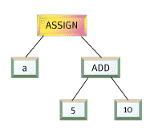

OK,
I'll admit it. I'm a lazy programmer. Whenever I can get away with it,
I love to get other people to do my job for me. And as a programmer focusing
on gameplay and simulation, life keeps getting more and more complex.
Just as the things we used to toil away at for hours - sound mixing, 3D
rendering, interrupt processing - are getting easier and easier, simulation
programming is getting harder and harder. Now that we have DirectSound
and DirectDraw, when can we expect DirectGameplay?
I can remember a time not long ago when bits were the solution for everything.
Back then, when a designer wanted some cool new feature, the solution
was to write some code, find the next free bit in the CoolEffectsFlags
bit vector, and recompile. Once the designer enabled the bit, the new
feature emerged, ready for action. But lately, I've run out of bits.
The problem is, users are demanding more interactivity and unpredictability
from their games. They aren't satisfied with 10 types of weapons when
your competitor has 20. Moving platforms aren't sufficient if some other
game has rotating platforms. So what's a lazy programmer to do?
Scripting languages have been an integral part of games for many years.
Long before action games ran out of bits, adventure game authors recognized
the need for scripting to cope with the massive number of possible interactions
in their worlds. SCUMM (Story Creation Utility for Maniac Mansion), one
of the original adventure game languages, has survived virtually intact
until the present day, and is still used for games such as MONKEY ISLAND
3. As other game genres such as action, simulation, and strategy become
more complex, they too are incorporating scripting systems.
The best way to stay competitive in the race for bigger and better games
and game engines is to keep the engine as flexible, expandable, and robust
as possible. An internal scripting language allows you to create a separate,
crash-proof environment inside your game engine. This protected virtual
machine executes the complex and frequently changing gameplay code, protected
from the "real" machine running the game engine. By partitioning the code
in this way, you significantly reduce the complexity of the core engine,
resulting in fewer bugs and a more robust game. And since a language system
is far more flexible than a collection of "canned" effects, your engine
will be able to do more interesting things, even things you didn't originally
anticipate.
Using a script language allows the engine programmers to focus on what
is important to them - refining and optimizing the core technology of
the game - while the game designers can handle the gameplay details. If
the language is simple and well-designed, nonprogrammers can implement
their designs directly in the script language without endangering the
core engine code or involving the engine programmers. And since programmer
time on a project is usually limited, recruiting designers as scriptwriters
allows more of the original design to be realized, resulting in a more
interesting final game. In fact, most designers jump at the opportunity
to directly implement their ideas in script, even when it requires learning
a new language.
The Snowball Effect
Over three
years ago, the original team developing DARK FORCES (the sequel, with
which this article is concerned, is shown in Figure 1) took the unconventional
step of implementing some of the important game systems using a special
parsed opcode language called INF. INF (which, as far as anyone on the
original team can recall, doesn't stand for anything) was used for simple
tasks such as moving sectors and elevators around, tracking the mission
goals, and generating new enemies. INF didn't require any complex parsing
because the format was simple and direct - the script equivalent of assembly
language. One of the design goals in creating the sequel was to expand
and enhance the INF language, making it more powerful and user-friendly.
|
Figure 1: Dark Forces |
One of
the main complaints from level designers on the original project was that
INF required the use of a lot of specific flags and opcodes to enable
various features. A common fixture near the designer's workstation was
a stack of pages affectionately known as the "Zen and the art of INF."
The first draft of a replacement INF retained its basic structure, but
translated the numerical codes and flags into text so this "bible" would
no longer be necessary.
One day, someone suggested that if the language was expanded slightly,
it could take on the added responsibility of scripting the results of
powerups, which were handled in-engine in the original game. Shortly after
making these extensions, someone else suggested that it would be nice
to add some simple math and conditional opcodes to the language, and these
were also added. And so it went, for a period of weeks, as more and more
systems were absorbed into the rapidly expanding snowball that was INF
2. It became clear that there was a need for a more flexible, all-purpose
scripting language, and the snowball transformed into COG (which, true
to the spirit of INF, also stands for nothing).
The Paths Not Taken
There were
two primary goals for our language. First, the syntax should be powerful
enough to offer complex loops, conditionals, and nesting, but familiar
enough to be learned and used by a nonprogrammer. Second, the language
must execute quickly enough to be useful in a real-time action game.
The first stop on any language shopping trip should be the catalog of
free compilers at http://www.idiom.com/free-compilers/.
Here, you can find dozens, if not hundreds, of existing scripting libraries
that can be linked with your application. Each of these has various advantages
and disadvantages. Some are very simple, such as LISP or FORTH, while
others are quite complex, such as JAVA, Tcl, or LUA. Most of these languages
are also completely free, the products of university or government research
projects. The main disadvantage of using a ready-made language is performance.
Many of the languages are at least partially interpreted, and many do
not provide source code for the speed-critical execution kernel. If development
time is the primary concern, or if your application is less dependent
on fast execution, there are several excellent possibilities here.
Since execution speed was a primary concern, the possibility of expanding
the game engine via dynamic link libraries (DLLs) instead of a script
language was considered. The advantage in execution speed was clear, but
using DLLs would have made it difficult for the game designers to use
the language directly. Even though we felt comfortable introducing them
to a limited C syntax and structure, we didn't want to take the further
step of introducing them to the complexities of compilers, build environments,
linking, and so on.
The final option, and the one that we eventually implemented, was to create
a custom language execution kernel and parser. The speed issue was addressed
by performing the important, time-critical operations in native code and
exporting these support functions to the language system as COG library
functions. These library functions could be augmented via DLLs, which
gave the advantage of native-code speed with the ease-of-use of a custom
language.
COG
The rest
of this article focuses on the language problems and solutions that we
used in creating the 3D action-adventure game JEDI KNIGHT: DARK FORCES
2 for the PC.
For the JEDI KNIGHT language, christened COG by the designers, we chose
to implement a custom, compiled language that closely resembled the syntax
of C. Using the C syntax as a starting point, we removed most of the obscure
keywords and constructs and even removed some fairly major portions of
the language dealing with function declarations and switch statements
because they were significantly more complex to parse and execute than
the rest of the language. We chose the C language as a starting point
because of its familiarity and the wealth of books and tutorials available
teach the language to nonprogrammers.
Just as in C, the syntax of the COG language is less important than library
of functions at its disposal. The COG library provides about a hundred
different functions to the author, ranging from environment manipulation
commands to information queries. The author uses these functions to control
the game environment while using the language syntax to provide branching
and looping control.
The game engine executes the scripts in an event-driven manner. For example,
when two objects collide with each other in the physics engine, any COG
scripts linked to either object receive a "touched" event. This event
contains parameters that allow the script to identify which objects were
involved in the event and the type of event that occurred. Based on this
information, the script can manipulate the game state in whatever manner
it wishes, or can simply ignore the event. COG scripts can also contain
links to each other, which enable them to exchange messages. These events
make up the primary interface between the engine and the language system.
|
TABLE 1. Sample COG event messages |
||
|
Messages
|
Description
|
|
|
Touched
|
An object or surface was touched by another object. References to both collision participants can be retrieved. | |
|
Entered
|
For sectors, called each time a new object enters the sector | |
|
Damaged
|
Called whenever the object would take damage from weapons or explosions. References to the cause of the damage and the type of damage are provided to the handler. | |
|
Created
|
Called on a new object when it if first created | |
|
Killed
|
Called when the object is about to be removed from the game | |
|
Crossed
|
Called for an adjoin plane whenever an object crosses it | |
|
Arrived
|
Called when a moving object reaches its destination | |
|
Timer
|
A timer event set by the script has expired | |
|
Sighted
|
An object is seen by the player for the first time | |
There are additional messages that are delivered directly to the COG script
rather than through the objects to which a COG script is linked. A startup
message is sent to each COG script at the start of a level, and a respawn
message is sent each time the local player dies. Each game object also
has the ability to set a repeating pulse event or a one-time timer event
to be delivered at some point in the future. This allows a combination
of event-driven and scheduled execution.
Because we removed the standard C syntax for function declarations from
our language for simplicity, each script is organized much like a large
switch statement. The entry points into the code for various types of
events are labeled using the standard C label syntax. Also, because COG
expanded on the standard C variable types with the addition of game-specific
resource variables (sector, thing, sound, and so on), the script variables
are declared in a special header. The level editor (LEIA, shown in Figure
2) also reads this header so it can display the symbols to the designers
and allow them to view edit the symbol values.
|
Figure 2: JEDI KNIGHT's level editor LEIA |
Execution Model
Each
script that exists in a level is linked to any number of other objects
in that level: walls, enemies, doors, other COG scripts, and so on.
COG scripts execute as separate virtual machines, each with its own
variables, stack, and execution pointer. Because of this, COG scripts
are protected from each other. One badly written COG script can only
affect itself and the objects to which it is linked. Each script is
a separate resource that is loaded along with a game level. A single
script can be placed in a level multiple times, with each placement
having its own isolated environment.
A sample COG script is shown in Listing 1. This script creates an animating
neon sign which, if it is damaged, will explode in a shower of sparks.
Symbols not marked local can be modified directly in level editor tool.
The desc= field tells the editor what descriptive string to display
when the designer is editing that variable.
Listing 1. Sample COG Script.
#00_neosign.cog
#
#if this cog will cycle through frames 0-(lastFrame-1), at framerate
fps
#if damaged, it will go to frame lastFrame and stop, create sparks and
sound
symbols
message startup
message damaged
surface sign mask=0x448
float fps=2.0 desc=speed of anim
template sparks=+sparks desc=created when shot
sound exp_sound desc=played when shot
end
code
startup:
// Start the animation looping but skipping the first 2 frames
SurfaceAnim(sign, fps, 0x5);
return;
damaged:
if (GetWallCel(sign) == 0)
return; StopSurfaceAnim(sign);
if (exp_sound)
PlaySoundPos(exp_sound, SurfaceCenter(sign), 1.0, -1, -1, 0);
SetWallCel(sign, 0); CreateThing(sparks, GetSourceRef()); return; end
Access Control
One important
decision made with COG was to disallow direct access to internal engine
variables and structures from the scripts. If a COG script wishes to examine
or modify these internal variables, it can do so only via library function
calls. This is an important step in making the language crash-resistant.
If a COG script could directly manipulate variables in the engine, there
would be nothing to prevent badly written or out-of-date scripts from
wreaking havoc with other systems. By requiring the use of access functions,
any amount of validity checking and network synchronization can be added
without affecting the scripts themselves. This requires a little extra
work for the language programmer, since more functions will have to be
written, but it pays off in terms of code stability down the road.
The COG library functions are actually just C function pointers that are
visible to the COG scripts as global symbols. When the execution kernel
encounters a call to one of these functions, it jumps to the native C
code. The C code then calls language support functions to retrieve its
arguments from the stack and return the results of the call back to the
language. Since the functions are in native code, they execute significantly
faster than the script language itself. For this reason, frequently performed
tasks are written in C and called as library functions. Table 2 gives
examples of the types of functions contained in the COG function library.
|
TABLE 2. Sample COG library functions |
||
|
Function
|
Description
|
|
StartAnim |
Starts a page-flipping animation on a surface, sprite, or material | |
SectorThrust |
Sets a thrust force for a sector | |
SetThingFlags |
Sets bits in the thing's flag field | |
GetCurSector |
Retrieves a reference to the sector a thing is currently contained in | |
CreateThing |
Creates a new thing in the world | |
PlaySoundThing |
Plays a sound spatially linked to the position of a thing | |
SetTimer |
Sets a timer event for some future time | |
PlaySong |
Plays a redbook music track | |
AISetTarget |
Sets the target an AI object is attacking | |
AISetMode |
Sets the mode of an AI object | |
MoveToFrame |
Moves an object along a path to a specified position, used for moving doors, elevators, and so on | |
Compilation
For the
script code to be executed as efficiently as possible, it must be translated
from the text source code to some internal representation that can be
executed quickly. This process is called compilation, and the compilation
of our language source is just a simplified version of what a normal compiler
does to translate source code into native machine code. Instead of producing
Intel or PowerPC opcodes, we produce our own virtual machine opcodes.
The language's virtual machine is a type of simulated CPU. For COG, we
use a very simple model called a "stack machine." The stack machine gets
its name from the fact that it performs all operations on a single stack.
Anyone who has used an HP calculator will be familiar with the system.
To add 5 and 10 on a stack machine, we would execute the opcodes
Push 5
Push 10
Add
The stack
machine contains very few opcodes, making it simple to implement and efficient
when executing. Our goal is to quickly compile the source code written
by the designer into our custom stack machine opcodes. Any valid sequence
of commands in the COG language can be broken down into these basic operations,
just as normal C code can be translated into the basic opcodes of your
target CPU.
The COG compilation process happens in two steps. First, the code is broken
down into its relevant language parts or tokens. COG tokens, just like
C tokens, include all the language keywords
(if, then, else) and
operators (+, *, &&). This stage of compilation is called lexical
analysis or "lexing."
The second
part of the compilation process involves taking the tokens from the "lexer"
and assembling them into the syntax of the language. This is a more complicated
process and is based on a formal specification of the language. The formal
language specification defines in detail every possible expression that
can be constructed with the language in a recursive format. It seems a
little awkward at first, but becomes clear after some study. For example,
the formal definition of an addition operation is
(additionExpression) : (expression) + (expression)
This
defines an addition expression as two separate expressions separated by
the "+" token. Since the addition expression is just one of the many possible
definitions of the more general "expression," you can see how the processing
the language quickly becomes a recursive problem. The lowest level of
the specification - the "atoms" of the language, so to speak - are the
constants and variables.
Since parsing the language is a recursive problem, we build a tree to
represent the structure of the source code as it is being parsed. As each
language construct is recognized, we add it to the tree. The type of expression
we recognize determines the structure of that small part of the parse
tree. When the tree for the entire function or source file is completed,
we can simply traverse the tree in depth-first order and create the stack
machine opcodes that we will later execute.
Returning to the simple addition example, our completed parser should
construct the parse tree in Figure 3 for the source code a=5+10.
|  |
|
Figure 3: Simple Parse Tree |
Because
the language parsing is done recursively, the parse automatically handles
normally tricky problems such as nesting and order of operations automatically.
When the code a=(5*2) + (a^2) is parsed, the parser will recognize the
subexpressions 5*2 and a^2 first, and will pass the completed parse trees
for these subexpressions to the code that creates the tree for the addition
expression, resulting in a single tree for the entire expression.
The most complex expressions to parse are those involving loops and branches.
These expressions require the generation of code using the branching opcodes,
which means the parser must know the address to which it needs to jump.
For example, to generate code for if <condition> then
<expression>,
the parser must know the address of the code address immediately following
the expression subtree in order to generate a GOFALSE opcode to jump to
this code if the conditional fails.
The trick to generating code for these branches is to generate code in
two passes rather than one. The first pass, known as "backpatching," doesn't
generate code, but simply counts the number of opcodes produced by each
node of the parse tree. During this first pass, as each node is encountered
while traversing the tree, the code address (index into the array of opcodes)
is noted both before the opcodes from the node are added and after. After
this first pass, each node now contains the code address just prior to
and just following its own subtree's code. Now, on the second pass, the
branches that were previously expressed in terms of end of node
<expression> can
be expressed as actual code addresses.
This is obviously a complex topic that we have examined only superficially.
For more information on the theory behind parsing and the use of parse
trees, the standard text is Compilers: Principles, Techniques,
and Tools by Aho, Sethi, and Ullman.
|
TABLE 3. Sample COG "stack machine opcodes. |
||
|
Opcode
|
Explanation
|
|
|
Push
|
Pushes a constant of symbol onto the execution stack | |
|
Pop
|
Pops the next value off the execution stack | |
|
GoFalse
|
Pops the top stack value and jumps to a new execution address if it is equal to 0 | |
|
Go
|
Jumps to a new execution address | |
|
Stop
|
Stops execution | |
|
CallFunc
|
Pops the next value from the stack as a C function pointer and calls that function | |
|
Add
|
Pops the next two values from the stack, adds them, and pushes the result onto the stack | |
|
Assign
|
Pops the next two values off the stack, and assigns the value of the second value to the variable contained in the first | |
The Silver Lining
Fortunately,
it's not nearly as difficult as it sounds. Writing compilers is an old
and well-established science. There are numerous of tools to simplify
the creation of an efficient parser. In fact, this is one of those rare
computer science problems that can safely be called "solved." The parsers
generated by the compiler tools are consistently more efficient than what
a human programmer could create because they deal with the parsing problem
as a complex state machine. Even a simple language specification results
in a state machine with so many possible states and transitions that a
mere mortal programmer would be driven (or bored) to tears.
One free tool called "lex" is commonly used to generate C code implementing
a lexical analyzer based on a user-supplied grammar specification. Since
COG follows the C syntax, we modified an existing free C lex specification
file from the Internet to create the lexer for the language. This ANSI-C
lex specification can be found at
http://www.cis.ufl.edu/~fryman/c.lex.spec.html.
Similarly, another free tool called yacc (for Yet Another Compiler Compiler)
can be used to transform a formal language specification into a C module.
yacc and lex are designed to work together, so the resulting source code
modules can simply be compiled and linked to create a fully functional
parser. For COG, the same Internet site yielded a full C grammar specification
for yacc, which was trimmed down to our needs and used to create the parser
module. The URL for the ANSI-C yacc framework is
http://www.cis.ufl.edu/~fryman/c.yacc.spec.html.
The resulting compiler has all the tools needed to break down the source
code and recognize the language syntax, but it is still your responsibility
to write the "hooks" that tell the compiler what actions to perform when
the language is recognized. These hooks are what enable us to build our
parse tree. By inserting this parse-tree building code, along with some
code to manage the allocation and definition of the language variables,
we were able to create a C-subset compiler in about a day.
Both lex and yacc are available in many forms and permutations; some free,
some not. And while lex and yacc are the most common compiler tools, there
are several others including full-featured language construction environments
such as VisualParse++ by Sandstone Technologies. Whichever tool you use,
the end product is the same - a stream of opcodes that can be executed
quickly and efficiently by your virtual machine. Check out the free compiler
catalog mentioned earlier for links to these and other useful language
tools.
For more specific information on the lex and yacc tools, check out Lex
& Yacc by Levine, Mason, and Brown in the O'Reilly & Associates
UNIX Programming Series.
Putting It All Together
The finished
parser, developed using the free tools mentioned above, is incredibly
fast and flexible. In a typical JEDI KNIGHT level, there are about 50
different script files that need to be parsed and compiled into our opcode
format. On a typical machine, all these scripts compile in well under
one second. For this reason, we decided against using an external compiler
and instead load the source directly when loading the level. This improves
the turnaround time for testing script changes, since the designer can
quickly edit the script code and reload the level to test changes.
One aspect of the scripting system that proved critical for our project
was the integration of the scripts and the level editor. The level editor
not only allows the designer to place scripts into a level, but also ensures
that the various links in the script are correctly assigned and remain
correctly linked as the level changes. When a designer places a script
resource into a level, the editor scans the header of the script to determine
what variables can be assigned externally and places a graphic representation
of the script resource in the level. This icon has a spatial location
in the level, although its location isn't important to the script. Typically,
designers place scripts near the objects to which they link. Once the
script is placed, the designer can bring up the property dialog for that
script and view and change its assignments. If the script contains links
to other things or surfaces, these are assigned by clicking on the correct
type of item in the level and clicking a link button. Links between COG
scripts and world entities are shown graphically in the editor by connecting
them with lines. If the script contains resources such as sounds or bitmaps,
a pull-down menu displays the possible choices.
Another area that should be addressed is debugging. There are two main
issues here - debugging syntax parsing problems, which normally is solved
by adding better error-reporting and recovery code into the parser, and
run-time debugging, which can take many forms. One possible method of
run-time debugging of scripts is to allow the user to trace execution.
In JEDI KNIGHT, the designer can enter a console command to turn tracing
on for a specific COG script, which will cause that script to output debugging
information each time it executes. A more complete system would allow
for single stepping through script opcodes. The real challenge, which
has not yet been addressed in COG, is to allow for "source-level" debugging,
where users can watch their variables change and see the script step through
the original code. This feature may seem like a lot of unnecessary work,
but it was the top request made by our designers at the end of the project.
Implementing
and maintaining the language was a significant task, and it took the work
of several programmers to keep up with the designer demand for new COG
library functions. But when compared to the time that would have been
spent writing specific systems for things such as mission objectives,
inventory management, powerup sequencing, puzzles, doors, elevators, and
so on, using a language was a definite win.
After a period of uncertainty, most of the designers started becoming
comfortable with the language and began to experiment with it. Strangely
enough, the key here was trust. Once the designers were convinced that
the language was safe enough that they wouldn't crash the entire game
by writing a bad script, they began to try more interesting things with
the language. After some time, they effectively took over the majority
of the gameplay programming for JEDI, as planned. Some of the designers
were so enthusiastic about the use of scripting that they later took evening
classes in C and C++ programming, and at least one designer is moving
into programming full-time. Even those designers who preferred not to
work closely with the language found it easy to place and link existing
scripts written by other designers into their own levels.
Perhaps the most important effect the language had on JEDI is illustrated
by an example. One day, a large group was gathered around the desk of
one of the level designers on the project. It seems he had created a puzzle
script where the user hits a switch on the wall causing the water level
in the room to rise slowly, carrying the player along to the top of the
room. It seems simple, except we had just recently decided not to support
moving water levels in the game. No one, including those who had worked
on the engine and the language, could figure out how he did it.
I still don't know. I'm too lazy to find out.
Robert Huebner is a senior programmer at LucasArts Entertainment specializing
in network and simulation programming. Prior to JEDI KNIGHT, he worked
on DESCENT and other online titles for Interplay Productions. After JEDI
KNIGHT, he will sleep for a month.